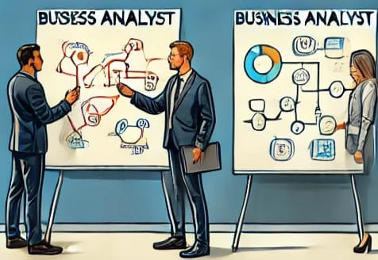
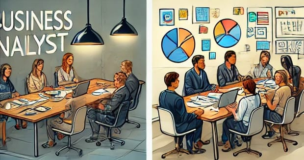
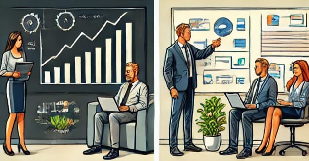
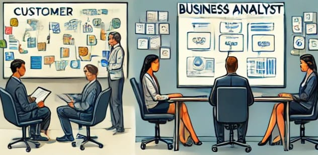
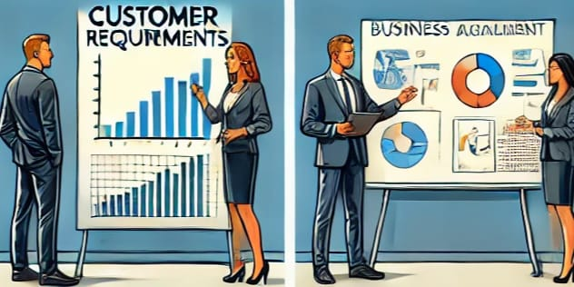
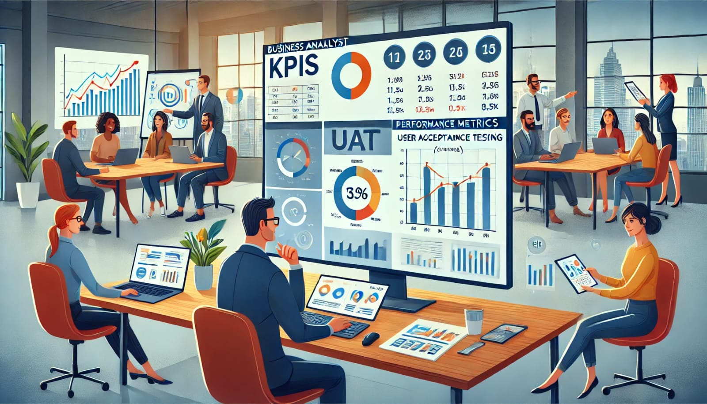

Business Analyst Portfolio
Home
About
Projects
Calculator
Registration
What does a business analyst do?
Leading brainstorming sessions with stakeholders to gather business needs and explore potential solutions.

Creating and reviewing user flow diagrams on a whiteboard to identify process steps and optimize workflows.

Hosting direct interviews with stakeholders to gather functional and non-functional requirements.
Using tools like Power BI or Tableau to present data insights that support informed decision-making.

Writing Business Requirements Documents (BRD) and Functional Specifications with clarity and structure.

Collaborating with developers, designers, and QA teams during sprint meetings to ensure the solution aligns with requirements.

Mapping customer experiences using sticky notes to identify pain points and opportunities for improvement.

Monitoring project KPIs and evaluating success metrics using dashboards.
Working with clients and end-users to conduct testing and ensure the solution meets business needs.